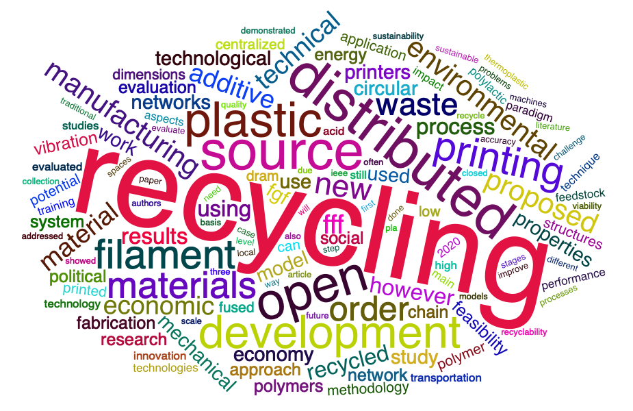
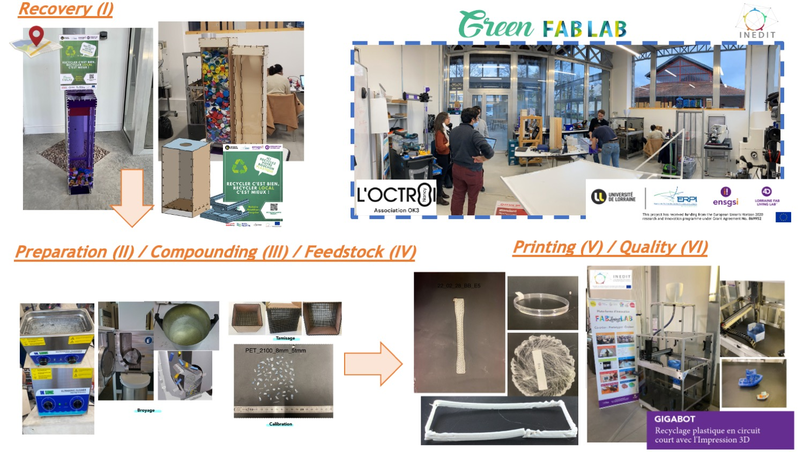

Curriculum Vitae
Franco-Colombien, Né le 06/05/1988 à Bogota, Colombie
27, Rue du Pont de Pierre, 54270 - Essey-les-Nancy
Tel : 07.78.78.38.07
CNU 60, 62
Recyclagé distribué; 3D Printing; Recyclage plastique; Soutenabilité
The contents of this div will be output in a center LaTeX environment, but will appear in HTML (and any other output format as a simple div with the class center)
Présentation
Je suis ingénieur mécanique formé à l’Université Nacional de Colombie titulaire d’un Master II en Management de l’Innovation et du Design Industriel et PhD. en Génie des Systèmes Industriels de l’Université de Lorraine. Mes expériences professionnelles et de recherche sont centrées sur le champ de la fabrication additive open source (également appelé Impression 3D) comme vecteur de développement industriel soutenable.
Mon parcours est fortement lié à la recherche et au développement d’une nouvelle filière distribuée en circuit court pour la valorisation des matières plastiques recyclées via la fabrication additive. Cela implique une approche multi-échelle afin d’appréhender les enjeux liés au procédé technologique, la filière associée et le contexte territorial tout en gardant une collaboration avec de multiples acteurs et la mobilisation de différentes méthodologies pour améliorer, tester et expérimenter de nouveaux usages.
Je travaille sur un premier axe portant sur la validation du procédé d’impression 3D open source en tant qu’outil reproductible pour la fabrication des pièces. Une attention particulière est portée sur la performance géométrique, mécanique et vibratoire de ce procédé à l’échelle industrielle standard. Un deuxième axe central dans mon parcours est la faisabilité technique du recyclage des thermoplastiques pour les processus d’impression 3D. J’ai eu l’opportunité de travailler pendant ma thèse sur les caractérisations mécanique et chimique de la matière recyclée dans la chaîne d’impression en co-tutelle avec l’Équipe de Recherche sur les Processus Innovatifs (ERPI) et le Laboratoire des Réactions et Génie des Procédés (LRGP — UMR 7274) à Nancy. Je collabore avec le groupe de recherche FAST (Free Appropriate Sustainability Technology) de Western University de Canada sur le développement open source hardware dans une vision de démocratisation de la technologie associé au recyclage distribué. Une troisième axe en cours de développement est l’analyse de la soutenabilité de cette filière en collaboration avec l’équipe InSyTe de l’Université Technologique de Troyes. Le développement d’indicateurs au-déla des technico-économiques intégrant la capacité de charge des écosystèmes et leurs services est un enjeu prometteur pour rendre les filières industrielles plus résilientes.
Actuellement, je participe au développement du démonstrateur Green Fablab1 dans le cadre du projet Européen H2020 INEDIT. Cela est une opportunité pour mieux comprendre l’opérationnalisation et la démultiplication de la démarche de recyclage distribué auprès des acteurs et des communautés locales. En parallèle, je collabore également dans le projet Erasmus+ Climatelabs que cherche à renforcer les capacités de recherche appliquée et d’innovation de dix universités partenaires du Mexique, du Brésil et de la Colombie par la conception et la mise en œuvre de Social Innovation Labs pour l’atténuation et l’adaptation au changement climatique.

Formations
Expériences Professionnelles
Compétences
Activités de Recherche
Synthèse
Dans la période 2014-2023, 9 articles dans des revues à comité de lecture et 5 conférences internationales ont été publiés comme illustré dans la Figure @ref(fig:bilan).
Cette production scientifique relève des mes travaux de recherche mais aussi dans la participation des différents projets que j’ai participé au sein du laboratoire ERPI. Au courant de l’année 2022, 4 propositions d’articles ont été soumis à considération dans des revues à comité de lecture (en attente de décision) et 2 chapitres d’ouvrages collectifs orientés vers la communauté de recyclage de matériaux sont en cours de lecture par les éditeurs.
Le tableau montre les différents journaux auxquels nos propositions ont été publiées. L’annexe @ref(articles) présente une liste complète de la production scientifique.
Mes activités de recherche ont comme dénominateur commun le croisement de trois enjeux sociétaux forts : 1) le vecteur industriel de la fabrication additive, 2) Celui du recyclage des matières plastique, 3) la croissance des espaces d’innovation dites ouverte type Fab Labs / hackerspaces. Chaque élément est très important dans un contexte où notre société doit agir à tous les niveaux (produit-procédé / filière / territoire) vers une transition écologique des modes de production, de fabrication et de consommation en prenant en compte les enjeux environnementaux actuels.
Mes travaux de recherche ont abouti à la proposition d’un cadre conceptuel de filière de recyclage des thermoplastiques pour l’impression 3D en considérant les étapes clés et un premier ensemble des indicateurs multicritères pour évaluer cette proposition comme illustré dans la figure Figure @ref(fig:DRAM).
Je travaille avec différents collègues en France et à l’étranger pour pouvoir clarifier étape par étape les implications et les verrous scientifiques et technologiques afin de démocratiser une démarche locale de recyclage distribuée.
La particularité de la recherche que je développe au sein du laboratoire ERPI et dans la plateforme de recherche du Lorraine Fab Living Lab avec d’autres partenaires industriels et académiques est de pouvoir mieux comprendre autant la partie opérationnelle du système, mais également, l’implication systémique de cette nouvelle filière pour un territoire.
Aujourd’hui, dans le cadre du projet INEDIT, qui vise le transfert des approches ‘Do-It-Yourself’ vers un context industriel, nous sommes en train de mettre en place un démonstrateur qui permettra tester l’approche appelé ‘Do-It-Together’ dont la particularité est la connection de la co-création et la fabrication grâce à des plateformes numériques en incluant la réalité virtuelle (Figure @ref(fig:DRAM-INEDIT)).

Indéniablement, le développement de ce projet mobilise un panel de méthodologies de recherche dans la conception mécanique (e.g; plan d’expériences, validation statistique/ANOVA, simulation) et en innovation (e.g. recherche opérationnelle, analyse multicritère, systèmes dynamiques) et ouvrent un champ d’expérimentation non négligeable pour la créativité de solutions avec des étudiants en ingénierie.
A partir de ce contexte, les axes de recherche peuvent être décrits d’un point de vue technologique (micro) vers une vision système (macro) de l’implication de la filière de recyclage en tant que système socio-technique.
Axes de Recherche
L’impression 3D open source: validation des standards de fabrication
La fabrication additive est reconnu comme un sujet disruptif. Il est en train de changer les repères technologiques des domaines industriel, de la conception et du design. Mais aussi à une échelle globale dans la société. Le principe de la fabrication couche-par-couche offre un nouvel espace de liberté à la conception mécanique et à la fabrication grâce à une meilleure maîtrise de l’apport en matière première.
La technologie de dépôt de fil fondu (Fused Filament Fabrication –FFF- en anglais) est la plus répandue grâce à son principe d’extrusion de polymère qui offre une grande flexibilité. Sa démarche de conception open source permet un processus collaboratif d’amélioration distribué à moindre coût. Cependant, la démultiplication des type de machines, des matériaux utilisés et d’expérimentations appellent à la détermination de standards de performances. Et ainsi permettre une comparaison et une validation des procédés techniques.
Une première échelle d’analyse que je travaille concerne la validation des procédés open source en tant qu’outil de fabrication reproductible et fiable pour un usage semi-industriel. J’ai eu l’opportunité de me concentrer sur la caractérisation de la performance géometrique à travers des modèles de benchmarking2. Mais également grâce à des expérimentations 3 pour des applications médicales où j’ai exploré le comportement mécanique des matériaux. Systématiquement des plans d’expériences et d’analyses statistiques ont été mises en oeuvre grâce à mobilisation de méthodologies adaptées Nous explorons également le comportement vibratoire et d’amortissement des échantillons à partir de FFF4 avec les collègues du Laboratoire d’Études des Microstructures et de Mécanique des Matériaux (LEM3) à Metz - France. Ces travaux permettent de positionner la FFF open source auprès de la communauté scientifique et industrielle en tant qu’outil fiable et reproductible.
D’un autre côté, le procédé de dépôt par granulés (Fused Granular fabrication –FGF- en anglais) est une avancé technologique récente et c’est une grande opportunité pour démocratiser davantage l’utilisation de l’impression 3D. Ce procédé utilise directement de la matière première en forme de pellet. Cela ouvre un champ d’exploration pour des matériaux élastomères thermoplastiques et de matière composites afin de pouvoir imprimer en grande taille. Nous avons travaillé pour possitioner la performance mécanique, dimensionnel et economique de cette technolgie auprès de la communuté scientifique 5.
Filière durable de l’impression 3D pour le récyclage
Un deuxième volet de ma recherche concerne la proposition d’une méthodologie systématique permettant d’évaluer la fabrication et l’évaluation de la matière recyclée utilisée dans le procédé d’impression. Cette méthodologie se décline dans l’étude et la modélisation d’une filière de recyclage en circuit court pour l’impression 3D open source.
L’enjeux essentiel de ma thèse et du projet post-doc 2017-2019 a été de démontrer l’imprimabilité des matières recyclées. En ce sens, le couplage de tests de caractérisation des propriétés mécaniques (e.g. résistance à la traction, module d’élasticité) et chimiques (e.g viscosité, calorimétrie) avec de multiples cycles d’extrusion, impression et de moulage par injection. Un des premiers résultats a été une démarche de caractérisation chimique6, et mécanique7 de la dégradation de l’acide polylactique (PLA) qui est le thermoplastique le plus utilisé dans le domaine FFF. Cette approche pour évaluer la recyclabilité permet de simuler le cycle de vie prolongé des produits recyclés. Mon travail de thèse a eu pour résultat principal de montrer que le recyclage distribué du plastique à l’aide de technologies 3D open source (imprimantes 3D et extrudeuses) est une option possible pour la valorisation des déchets plastiques.
D’autre part, au vu des ces résultats encourageants, j’ai eu l’opportunité d’accompagner les travaux de thèse de Pavlo Santander dont son point de départ était la faisabilité technique du recyclage via l’impression 3D. Nous avons donc changé de perspective dans le but de prouver la faisabilité de recyclage au niveau de la chaîne d’approvisionnement afin de mieux comprendre les paramètres logistiques liés à cette filière de recyclage.
Le faible taux actuel de recyclage des plastiques montre les limites de l’approche actuelle de gestion centralisée des déchets. Ce processus centralisé est complexe, coûteux et polluant en raison des multiples étapes de tri, de collecte et de transport. Le recyclage distribué des plastiques peut être imaginé comme une sorte de “réseau intelligent”, composé de petites unités de recyclage coordonnées fournissant des matière première secondaire (eg: filaments recyclés) à une communauté de pratiques (e.g. collèges / lycées, espaces fablabs et de prototypage). Le modèle conceptuel 8, et son application dans le contexte de Nancy en lien avec le projet Green Fablab 9 a prouvé son approche originale et une mise en œuvre reproductible.
Cette nouvelle approche du recyclage propose un système local adapté aux petites quantités de déchets. Sous ce nouveau paradigme, les problèmes économiques et environnementaux d’un recyclage centralisé seraient limités, principalement en raison de l’utilisation d’une technologie open source moins coûteuse, de plus courtes distances entre le lieu de récupération et le point de traitement.
Cet axe est en cours de recherche, et fait l’objet du développement dans le projet de démonstration appliqué INEDIT10.
Espace d’innovation pour la circularité
Le troisième volet concerne la compréhension des espaces d’innovation comme un levier fort pour l’intégration de projets locaux. Dans notre cas, la création d’une filière de recyclage plastique. J’ai pu travailler en collaboration avec des chercheurs de l’ERPI et de l’École d’ingénieur du CESI sur le caractère du projet Green Fablab en tant que projet fédérateur et voir de quelle façon l’intention stratégique du projet et de l’espace d’innovation co-évoluent au fil de temps. Cette recherche exploratoire présente un volet intéressant le développement du projet Green Fablab au Lorraine Fab Living Lab® 11.
La contribution principale a été de donner un aperçu du travail empirique sur la façon dont un projet de recyclage pédagogique est développé au sein d’un laboratoire d’innovation afin d’observer l’évolution de l’intention stratégique à la fois du projet et du laboratoire d’innovation. L’impact tangible et intangible, est mis en évidence dans la manière dont il se répercute sur le pilotage d’un projet d’innovation avec des élèves ingénieurs.
Ainsi, je participe dans le projet Erasmus+ Climatelabs dont l’enjeux essentiel est de concevoir et mettre en œuvre des espaces d’innovation avec 10 partenaires de l’Amérique latine (5 en Colombie, 3 au Brésil et 2 Mexique). En fonction des besoins, des forces, des défis et des caractéristiques des institutions et des territoires, chaque université mettra en œuvre un projet pilote, se connectera à des réseaux internationaux pertinents ainsi qu’à d’autres institutions nationales, construira l’infrastructure physique et virtuelle du laboratoire, et développera des stratégies pour la durabilité et l’extensibilité du projet. Ce projet est une opportunité pour partager la connaissance et l’expérience que ERPI/ENSGSI a mûri lors de la création et plus précisément, au cours du développement du projet de Green Fablab.
Les espaces d’innovation sont un sujet de profond intérêt pour les industriels et les académiques car ces espaces permettent de développer des compétences d’innovation et de créativité collective ainsi que nouvelles pratiques de travail qui reposent sur des approches de collaboration, de co-conception, de co-production et de co-création. Les notions de “fabrication personnelle”, de pratiques Do-It-Yourself ou de “making” sont souvent des approches sociales et collaboratives, impliquant le partage et la modification de conceptions en ligne, la coopération sur des projets et/ou l’utilisation d’outils dans des espaces partagés. En conséquence, ces terrains d’expérimentations pour chercheur et pour étudiants ingénieur dans la conception (mécanique et des systèmes socio-techniques) prend tout son sens.
Projet de recherche
La fabrication additive doit jouer un rôle très important dans le devenir de notre société en tant qu’outil pour la soutenabilité (Despeisse et al., 2017). Cette technologie permet d’avoir une utilisation efficiente de la matière première par rapport aux technologies traditionnelles de fabrication. Le principe de dépôt couche-par-couche fait que les procédés de l’impression 3D peuvent avoir un impact environnemental réduit en considérant le ratio du dépôt de matière, le type de matière et la géométrie optimisée pour l’usage adéquat. Dans ce contexte, le recyclage de matière première, spécifiquement le recyclage de polymères, la FA est une voie de recherche fondamentale pour explorer de nouvelles méthodes d’éco-conception à multiples échelles (Wu et al., 2022).
Figure @ref(fig:vosviewer) présente carte obtenue en recherchant les mots-clés de ma recherche à l’aide du logiciel VOSviewer avec la temporalité. En partant de cette base, le projet de recherche que je visualise aujourd’hui concerne trois éléments importants:
- La validation des matières premières (secondaires), des procédés open source et de l’application de la valeur ajoutée.
- L’évaluation systémique de nouvelle formes de production robustes.
- Vers une soutenabilité forte pour la fabrication additive
Le but à long terme est d’inscrire cette démarche dans l’ambition du plan d’action de l’économie circulaire de l’Union Européenne afin de répondre aux enjeux sociétaux de la gestion des déchets plastiques.
Validation des matières premières secondaires, procédés open source et applications
La validation de la faisabilité technique de recyclage a été faite pour l’acide polylactique (PLA) qui est la matière la plus utilisée dans ce domaine. Cependant, d’autres types de matériaux doivent être évalués et caractérisés en incluant leurs applications.
Du point de vue technique, il est nécessaire de développer une ingénierie de conception et de fabrication utilisant l’approche open source/hardware (Pearce, 2020, 2017) afin de promouvoir des technologies low-cost (Heikkinen et al., 2020). Pour continuer à démocratiser un recyclage distribué fiable, il faut assurer l’identification, la séparation et le nettoyage des niches de gisements traités localement. Afin de concevoir des produits et des systèmes qui répondent à des besoins ponctuels pour valoriser des niches de recyclage qui n’ont pas de valorisation dans le processus traditionnel.
Validation systemique de nouvelle formes de production
L’impression 3D est une brique technologique très importante pour la conception de nouvelles formes de production distribuée (Herrmann et al., 2020 ; Kleer and Piller, 2019) et pour les technologies de l’industrie 4.0. (Culot et al., 2020). Ce changement dans la façon de fabriquer conduit au besoin de développer de nouvelles méthodes d’analyse des configurations industrielles. L’acceptabilité du processus de recyclage distribué et sa diffusion plus importante passe par l’identification des leviers technologiques et de leur intégration dans les politiques publiques et sociales. Du point de vue méthodologique, je suis intéressé par l’analyse systémique des démarches de conception pour la soutenabilité. Ces démarches peuvent se placer au niveau du produit, du produit-service, et aller jusqu’aux systèmes socio-techniques (Ceschin and Gaziulusoy, 2016).
En vue de favoriser des symbioses industrielles dans une échelle micro et meso (e.g. éco-quartier) nous pouvons envisager plusieurs pistes telles que la co-création avec l’utilisateur final de produits intégrant de la matière recyclée ou la conception d’une diversité technologique (e.g. pas que l’impression 3D) pour la valorisation de matières recyclées. Cependant, il faut identifier les possibles ‘effets rebond’ afin de vérifier si la solution de recyclage en circuit court est pertinente et jusqu’à quels niveaux.
Soutenabilité pour les systèmes socio-technique de l’impression 3D
Depuis 2021, je travaille pour le Projet Everest Bio, financé par l’institut Carnot ICEEL, qui a pour objectif d’évaluer les services écosystémiques rendus par des activités industrielles fonctionnant en circuit court afin d’améliorer la prise de décisions des acteurs industriels et du secteur public.
Dans ce cadre, je tire les constats qu’aujourd’hui les systèmes industriels sont centrés principalement sur l’évaluation technico-économiques (Bakshi et al., 2019). Si bien, les approches de l’analyse de cycle de vie et de méthodes de calcul d’impact environnemental sont assez souvent utilisées, ils ne considèrent pas systématiquement l’ensemble des impacts d’une activité sur les écosystèmes (Liu and Bakshi, 2019). Au vu des rapports des comités scientifiques comme le GIEC (IPCC, 2017) ou IPBES (IPBS, 2019), les efforts de réduction de l’impact des activités humaines est un enjeu majeur.
Le verrou scientifique essentiel sera de clarifier une approche méthodologique propice à une action plus en synergie avec la nature qui reconnaît les limites planétaires et en minimise la perte de capital naturel et de biodiversité. L’identification et quantification des impacts des services écosystémiques pertinents pour une filière industriel et son territoire local doivent converger pour une démarche de soutenabilité forte (Barbier, 2019; Dietz and Neumayer, 2007) afin que les concepteurs perçoivent leur métier et leur action dans le monde. A long terme, ceci relève d’une approche inter-, voir trans-, disciplinaire de recherche (Jacobi et al., 2022).
Activités d’Enseignement
Description synthethique
Après mes travaux de thèse, mes activités d’enseignement ont débuté en 2017 en tant que chercheur contractuel vacataire à l’École Nationale Supérieure en Génie des Systèmes et de l’Innovation (ENSGSI) et depuis 2020 à l’Institut Universitaire de Technologie (IUT) Nancy-Charlemagne à Nancy. L’expérience des travaux de recherche m’a amené à proposer un TP autour de la recherche reproductible dans le cadre du module de Recherche, Innovation et Développement pour étudiants de cycle ingénieur généralistes de 3AI et parcours Master Design M2 - Innovation et Design Évalués par les Usages (IDEAS) et pour le master Master Urbanisme et Aménagement, Innovation Urbaine pour des Villes & Territoires en Transformation (IUVTT) de l’ENSGSI.
| Année | Heures - HETD |
|---|---|
| 2021 - 2022 | 91 |
| 2020 - 2021 | 69 |
| 2019 - 2020 | 57 |
| 2017 - 2018 | 75 |
Également, au vue de la thématique du recyclage de plastique et des espaces d’innovation, je me suis proposé pour aider dans la création de contenu de la Licence Professionnelle en Apprentissage AFTER (Animateur Facilitateur de Tiers-lieux Éco-Responsables) que dispense entre l’ENSGSI et l’IUT Charlemagne. J’ai réalisé des cours (CM), TD et TP et participé à la rédaction de documents supports (cours, TD, TP). J’ai également encadré des élèves ingénieurs de 2ème année lors de projets industriels ainsi que des étudiants du Master (M2 IDEAS) lors des projets de recherche de fin d’études. Les enseignement ont été dispensés pour un total de 292 heures équivalent TD.
Je présente en détail le contenu pédagogique et de mes contributions aux modules de formations qui donnent une aperçu de mes expériences d’enseignement : (1) Recherche, Innovation et Développement, (2) Modules de Licence AFTER, (3) Pôle Conception et Innovation Module Ingénierie de l’innovation II / Design Thinking; et (4) Introduction au prototypage et à l’impression 3D.
Module CI15. Recherche, Innovation et Developpement
Ce cours permet aux étudiants de 3AI et Master IDEAS de l’ENSGSI et IUVTT de maîtriser les éléments fondamentaux sur les bases de la recherche scientifique en considérant les étapes clés de la recherche scientifique : recherche documentaire ciblée, analyse de documents –essentiellement en langue Anglaise-, préparer et suivre un protocole expérimental et aussi travailler sur l’organisation et les modes de financement de la recherche. Le module est organisé en deux volets : la méthodologie de recherche et un atelier d’écriture pour réaliser un travail de synthèse sous la forme d’un article d’état de l’art. Il permet également de connaître les bases des données scientifiques, présentation de la structure des articles scientifiques et la gestion de référence (Mendeley et Zotero).
Ma contribution: Animations de séances TD sur l’application de la méthode de revue systématique de la littérature à partir d’une équation ciblée. J’ai également proposé une TD sur la recherche reproductible en utilisation de logiciels open source comme R et Github.
Licence professionnel Animateur et facilitateur de tiers-lieux éco-responsables (AFTER) – IUT Charlemagne - ENSGSI
La licence professionnelle AFTER est portée par l’ENSGSI et l’IUT Charlemagne à Nancy est centrée principalement sur la formation de profils pouvant gérer et animer des tiers lieux comme le Lorraine Fab Living Lab. La formation vise à former des personnes inventives et entreprenantes ayant un esprit créatif, qui sont intéressées par le « faire soi-même » ou avec autrui et ayant une forte attention portée aux enjeux environnementaux. Les modules ‘d’Animation d’un lieu’, ‘Exploiter durablement les ressources et les partenariats’ et ‘Recyclage des matériaux à l’aide des techniques Open Source’ font partie de l’UE gestion d’un tiers lieu dans lesquels nous abordons diverses thématiques autour de la gestion et animation d’un tiers lieux. Par exemple, les étudiants découvrent la méthode design thinking pour pouvoir animer des séances de conception et idéation. Également, une présentation sur l’approche de machines open source pour recyclage et projets phares dans la communauté.
Ma contribution: Présentation des enjeux de l’économie circulaire axés sur le recyclage de matière plastique. En lien, j’ai proposé des séances de TP recyclage et la mise en en application des ces outils technologiques présentes au Green Fablab avec un publique de élèves d’un collège classé “éducation prioritaire renforcé” (REP +). Cette animation permet découvrir les tiers lieux comme lieu d’expérimentation, sensibilité au recyclage de matière plastique et enfin, montrer le métier d’ animateur et de chercheur.
Pôle Conception / Innovation: Conception Mécanique/CAO
Ce cours d’introduction sur la méthode de conception “Design Thinking” s’appuie sur un processus de co-création impliquant des retours de l’utilisateur final. Cette approche de l’innovation permet de développer un produit ou un service qui est à la fois désirable, viable et réalisable par la combinaison des approches humaines, économiques et technologiques.
Ma contribution: Conception et animations des séances de TD pour la partie prototypage en lien avec les ressource technologiques du Lorraine Fab Living Lab.
Introduction au prototypage et à l’impression 3D
Ce module a été dispensé auprès des professeurs de technologie de l’Académie de Nancy-Metz. Il a donc été nécessaire d’en adapter le contenu et le format en fonction des connaissances initiales des interlocuteurs. Les échanges ont porté sur la prise en main des étapes du processus d’impression 3D, depuis un modèle numérique CAO jusqu’à la détermination des paramètres d’impression en fonction de la matière utilisée. Cette expérience a été très constructive d’un point de vue pédagogique et a répondu à des besoins locaux liés à l’implémentation de ce type de technologie dans les collèges et les lycées de la région.
Projet d’enseignement
Sur la base de l’expérience de création de cours pour les professeurs de collèges et des lycées, et plus précisément les expériences de recherche et la participation à des projets de recherche nationaux et européens, mon projet pédagogique concerne donc l’application des génie de conception mécanique en incluant des principes d’économie circulaire afin que les future élèves ingénieurs identifient le contexte de conception produit. Je peux le résumer en trois élément fondamentaux :
- La compréhension de la caractérisation des matériaux en utilisant l’approche open hardware comme support de fabrication afin de relever le comportement, et l’impact de fabrication traditionnels.
- La conception de produit en utilisant des critères de soutenabilité tels que la réparabilité, le reconditionnement et le recyclage. Cette phase de conception peut inclure des aides technologiques à la créativité numérique comme la réalité virtuelle afin d’explorer un espace de conception plus large.
- L’open source comme une pratique disruptive dans la conception mécanique et dans l’innovation produit.
Mon constat de départ à travers des travaux de recherche préfigurent une tendance forte dans la démocratisation des moyens de fabrication numérique et dans la conception mécanique. L’un des enjeux majeurs auxquels les futurs élèves ingénieurs vont faire face est de repenser les moyens de production et les filières locales tout en gardant un axe prioritaire sur la résilience des écosystèmes naturels. Ce paradoxe n’est pas simple, et relève de compétences auxquels les espaces d’innovation (éducatives, institutionnelles, publiques) comme les fablabs peuvent donner des leviers d’action concrets.
D’abord, la compréhension et la caractérisation des matériaux est un pilier essentiel dans la formation des ingénieurs. La communauté scientifique développe de plus en plus de matériaux bio-sourcés. Il y a un champ pédagogique à explorer en utilisant de nouveaux composites à base de déchets qui impliquent la caractérisation des matériaux, ainsi que des évaluations économiques et environnementales du cycle de vie. Plus spécifiquement pour le cursus d’Ingénierie, il s’agit donc de créer une connaissance de caractérisation mécanique open source pour comprendre les impacts qu’ont les choix des procédés de fabrication sur la performance mécanique. Assurément, un élément essentiel sera la compréhension des barrières et des opportunités inhérentes à la matière recyclée en tant que matière secondaire.
Ensuite, au vu des impacts écologiques de la surproduction et de surconsommation sur la capacité de charge de nos écosystèmes, il est impératif de favoriser des compétences pour prioriser le ‘droit à la réparation’ 12. Le développement d’outils à faible coût, gratuits et à codes sources ouverts, fabriqués numériquement (idéalement à partir de déchets recyclés) pour permettre la création des moyens de production y compris des outils scientifiques.
Et finalement, l’open source est très fédérateur dans la technologie de l’information et des communications. Je peux imaginer que ce rôle fédérateur l’open hardware peut aussi le faire grâce à la démocratisation de l’électronique et de la fabrication numérique. Cela pourra créer des nouvelles chaînes de valeur locales. L’approche pédagogique doit mobiliser fortement les capacités à la création et à la documentation en mode open source sur les concepts et prototypes dans une communauté ouverte en dehors de la communauté académique. Implémentées au sein des parcours ces compétences numériques nourrissent la création pédagogique active que peut compléter les bases théoriques autour de la conception mécanique et energétique.
Ce projet d’enseignement pourrait s’intituler “Conception de produit soutenable open source : les atouts de la collecte jusqu’au recyclage en circuit” Ce parcours aurait pour objectif de combiner les approches open hardware et Faire-soi-même afin d’éco-concevoir des produits et des procédés qui répondent aujourd’hui à la stratégie des enjeux de l’économie circulaire.
L’objectif est de proposer un cheminement cohérent et progressif aux étudiants en partant de l’analyse des besoins, co-créations de solutions, et prototypage des objets de conception intermédiaire à l’aide des techniques de l’impression 3D tout en identifiant une réutilisation possible d’un gisement aujourd’hui non valorisable.
Activités administratives et de valorisation
Activités d’encadrements pédagogique
Projets Industriels
2017-2018 Project Holipresse 1AI: Création d’un moule par système de strato-conception low-cost pour la fabrication de pièces injectées à partir de bouchons de bouteilles recyclés. Plus de détails:
Plast’If (2019- 2020): Test de caractérisation de matière plastique recyclée pour l’utilisation des machines d’impression directe -Fused Granular Fabrication FGF-. Plus de détails:
Projets Pédagogiques
2017-2018: Project Fabcity Nancy 2AI: Cartographie des initiatives sur de démarches de fabrication locale et circulaire. Cette démarche est portée par ERPI / ARTEM / ENSAD. Plus de détails:
Accompagnement des étudiants (10) pendant 6 semaines dans le module d’Initiation de Recherche de l’école d’ingénieurs CESI Nancy. Création de prototypes pour l’extrusion de filaments en utilisant open hardware. Plus de détails dans le lien:
Participation coordination et montage de projets
Transnational Academy of Social Innovation for Climate Action Erasmus+ KA220-HED - Cooperation partnerships in higher education. Le projet répond à la priorité de l’enseignement supérieur “Promouvoir des systèmes d’enseignement supérieur interconnectés” grâce à la structure de l’Académie, un réseau transnational de parties prenantes favorisant l’échange de compétences, d’expériences et de connaissances
INEDIT: Le projet collaboratif INEDIT (Open Innovation Ecosystems for Do It Together process) est un projet de recherche obtenu dans le cadre du programme H2020 de l’Union européenne débutant à l’automne 2019 pour une durée de 36 mois. Le consortium mis en place est constitué de 14 partenaires dont 3 français (ENSAM, Université de Lorraine et une PME parisienne, Crowd Prediction) et est coordonné par l’ENSAM. Budget: 6,4 M€
Climatelabs: Climate Labs vise à renforcer les capacités de recherche appliquée et d’innovation de dix universités partenaires du Mexique, du Brésil et de la Colombie par la conception et la mise en œuvre de laboratoires d’innovation sociale pour l’atténuation et l’adaptation au changement climatique. Dans un réseau avec des universités d’Espagne, de France et d’Italie, plus Ashoka comme partenaire expert non académique, le projet cherche à construire des laboratoires interdisciplinaires
2016-2017 Obtention d’un soutien Postdoctoral Région Alsace, Champagne Ardenne Lorraine. Responsabilité : Porteur du projet. Budget : 44 000 €
Projet GREEN_COMPO_3D. Valorisation en circuit court de déchets thermoplastiques pour la conception par impression 3D de structures composites. 2016. Appel à projets intra-CARNOT.: Porteurs du projet M. Camargo et H. Boudaoud. Budget : 14 000 €.
Ces deux derniers projets participent aux recherches menées dans le cadre du CPER SusChemPro, dans lequel le laboratoire est inscrit afin de développer les aspects « Green Fab Lab ». Porteur du projet : François Lapicque, LRGP-UL.
Relations avec le monde publique
Module a été dispensé pour des étudiants et des industriels de la région de Costa Rica. La thématique a concerné l’identification des étapes dans un processus de création des projets d’innovation, l’évaluation prospective du degre de nouveauté en utilisation des technologies eye-tracking et neuro-lab (e.g. capteurs physiologiques)
2018: Participation à l’organisation des congrès mondial des Fablabs –FAB14– distribué en france. Un format distribué a été mis en place donc l’axe éducation à été organisé à Bataville, dans le Grand Est. Plus de détails dans le lien:
2018-2019: La ville de Nancy a développé un Conseil d’Orientation de la Transition Écologique de Nancy (COTEN) afin de mettre en place des objectifs et des actions pour trouver des solutions aux enjeux environnementaux. J’ai participé en tant que représentant du laboratoire ERPI entre 2018-2019 au groupe de travail sur la gestion des déchets.
2017-2019: Participation annuelle à la Foire Internationale de Nancy avec le stand de l’Université de Lorraine : Open Citizen Lab.
Plus précisément, un travail de médiation scientifique à la Foire Internationale de Nancy pour les projets étudiants du LF2L. Dans ce cadre, les prototypes des étudiants sont présentés pour avoir des retours des utilisateurs. Cela est une activité pédagogique de confrontation sur les idées développées hors du cadre conventionnel académique. Egalement, mettre en place un stand du projet Green Fablab afin de interagir avec les visiteur et vulgariser la recherche.13
- 2016 Participation au concours de vulgarisation scientifique
Finale régionale : Ce concours permet aux doctorants de présenter leur sujet de recherche, en français et en termes simples, à un auditoire profane et diversifié. Chaque étudiant ou étudiante doit faire, en trois minutes, un exposé clair, concis et néanmoins convaincant sur son projet de recherche. J’ai pu participer lors de la finale Régionale, qui est le résultat d’un processus de sélection de 11 doctorants sur une trentaine de candidats. J’ai obtenu le , le prix du et la \(3^{ème}\) place après délibération du Jury.
Lien vers la vidéo de la prestation - Finale de l’Université de Lorraine 2016 :
Bibliographie
Bakshi, B.R., Ghosh, T., Lee, K., 2019. Engineering, markets, and human behavior: an essential integration for decisions toward sustainability. https://doi.org/10.1016/j.coche.2019.10.004
Barbier, E.B., 2019. The concept of natural capital. Oxford Rev. Econ. Policy 35, 14–36.
Ceschin, F., Gaziulusoy, I., 2016. Evolution of design for sustainability: From product design to design for system innovations and transitions. Des. Stud. 47, 118–163. https://doi.org/10.1016/j.destud.2016.09.002
Culot, G., Nassimbeni, G., Orzes, G., Sartor, M., Nassimbeni, G., 2020. The future of manufacturing: a Delphi-based scenario analysis on Industry 4.0. Technol. Forecast. Soc. Change 120092. https://doi.org/https://doi.org/10.1016/j.techfore.2020.120092
Despeisse, M., Baumers, M., Brown, P., Charnley, F., Ford, S.J., Garmulewicz, A., Knowles, S., Minshall, T.H.W., Mortara, L., Reed-Tsochas, F.P., Rowley, J., 2017. Unlocking value for a circular economy through 3D printing: A research agenda. Technol. Forecast. Soc. Change 115, 75–84. https://doi.org/10.1016/j.techfore.2016.09.021
Dietz, S., Neumayer, E., 2007. Weak and strong sustainability in the SEEA: Concepts and measurement. Ecol. Econ. 61, 617–626. https://doi.org/10.1016/j.ecolecon.2006.09.007
Heikkinen, I.T.S., Savin, H., Partanen, J., Seppälä, J., Pearce, J.M., 2020. Towards national policy for open source hardware research: The case of Finland. Technol. Forecast. Soc. Change 155, 119986. https://doi.org/10.1016/j.techfore.2020.119986
Herrmann, C., Juraschek, M., Burggräf, P., Kara, S., 2020. Urban production: State of the art and future trends for urban factories. CIRP Ann. 69, 764–787. https://doi.org/10.1016/j.cirp.2020.05.003
Jacobi, J., Llanque, A., Mukhovi, S.M., Birachi, E., Groote, P. von, Eschen, R., Hilber-Schöb, I., Kiba, D.I., Frossard, E., Robledo-Abad, C., 2022. Transdisciplinary co-creation increases the utilization of knowledge from sustainable development research. Environ. Sci. Policy 129, 107–115. https://doi.org/10.1016/j.envsci.2021.12.017
Kleer, R., Piller, F.T., 2019. Local manufacturing and structural shifts in competition: Market dynamics of additive manufacturing. Int. J. Prod. Econ. 216, 23–34. https://doi.org/10.1016/j.ijpe.2019.04.019
Liu, X., Bakshi, B.R., 2019. Ecosystem Services in Life Cycle Assessment while Encouraging Techno‐Ecological Synergies. J. Ind. Ecol. 23, 347–360. https://doi.org/10.1111/jiec.12755
Pearce, J.M., 2020. Economic savings for scientific free and open source technology: A review. HardwareX 8, e00139. https://doi.org/10.1016/j.ohx.2020.e00139
Pearce, J.M., 2017. Impacts of open source hardware in science and engineering. Bridge 47, 24–31.
Wu, H., Mehrabi, H., Karagiannidis, P., Naveed, N., 2022. Additive manufacturing of recycled plastics: Strategies towards a more sustainable future. J. Clean. Prod. 335, 130236. https://doi.org/10.1016/j.jclepro.2021.130236
Annexes
Liste de la Production Scientifique
Revues internationales à comité de lecture
Xue, F., Robin, G., Boudaoud, H., Cruz Sanchez, F.A., Daya, E.M., 2022. General Methodology to Investigate the Effect of Process Parameters on the Vibration Properties of Structures Produced by Additive Manufacturing Using Fused Filament Fabrication. JOM 74, 1166–1175. https://doi.org/10.1007/s11837-021-05051-9
Santander, P., Cruz Sanchez, F.A., Boudaoud, H., Camargo, M., 2022. Social, political, and technological dimensions of the sustainability evaluation of a recycling network. A literature review. Clean. Eng. Technol. https://doi.org/10.1016/j.clet.2022.100397
Alexandre, A., Cruz Sanchez, F.A., Boudaoud, H., Camargo, M., Pearce, J.M., 2020. Mechanical Properties of Direct Waste Printing of Polylactic Acid with Universal Pellets Extruder: Comparison to Fused Filament Fabrication on Open-Source Desktop Three-Dimensional Printers. 3D Print. Addit. Manuf. 3dp.2019.0195. https://doi.org/10.1089/3dp.2019.0195
Santander, P., Cruz Sanchez, F.A., Boudaoud, H., Camargo, M., 2020. Closed loop supply chain network for local and distributed plastic recycling for 3D printing: a MILP-based optimization approach. Resour. Conserv. Recycl. 154, 104531. https://doi.org/10.1016/j.resconrec.2019.104531
Cruz Sanchez, F.A., Boudaoud, H., Camargo, M., Pearce, J.M., 2020. Plastic recycling in additive manufacturing: A systematic literature review and opportunities for the circular economy. J. Clean. Prod. 264, 121602. https://doi.org/10.1016/j.jclepro.2020.121602
Cruz Sanchez, F.A., Boudaoud, H., Hoppe, S., Camargo, M., 2017. Polymer recycling in an open-source additive manufacturing context: Mechanical issues. Addit. Manuf. 17, 87–105. https://doi.org/10.1016/j.addma.2017.05.013
Cruz Sanchez, F.A., Boudaoud, H., Muller, L., Camargo, M., 2014. Towards a standard experimental protocol for open source additive manufacturing. Virtual Phys. Prototyp. 9, 151–167. https://doi.org/10.1080/17452759.2014.919553
Articles soumis récemment (en attente de décision) :
López, Víctor M; CAROU, DIEGO; Cruz S, Fabio A. “Feasibility study on the use of recycling materials for prototyping purposes: a comparative study based on the tensile strength” Journal: Part B: Journal of Engineering Manufacture. (Soumis en Feb 2022– en attente de décision des éditeurs)
Xue, F., Robin, G., Boudaoud, H., Cruz Sanchez, F.A., Daya, E.M.,“Characterization and optimization of the vibration properties of fused filament fabrication printed viscoelastic damping specimens”. Rapid Prototyping Journal.(Soumis en Mars 2022– en révision)
Santander P., Bautista S, Cruz Sanchez, F.A., Boudaoud, H., Camargo, M., Pearce, J.M., 2020. “Toward distributed local recycling networks for plastic waste: A system dynamics-based approach (Part I)”. Technological Forecasting & Social Change. (Soumis en Mars 2022– en révision)
Osorio F, Cruz Sanchez F, Camargo M., Dupont L.,Peña J., “Exploring team roles for social innovation labs: toward a competence-based role self-assessment approach” Journal of Engineering and Technology Management (Soumis en Mars 2022– en révision)
Conférences internationales à comité de lecture
Xue, F., Robin, G., Boudaoud, H., Cruz Sanchez, F. A., & Daya, E. M. (2021). Effect of process parameters on the vibration properties of PLA structure fabricated by additive manufacturing. In 2021 International Solid Freeform Fabrication Symposium. University of Texas at Austin.
Roux-Marchand, T., Cruz, F., Dupont, L., Camargo, M., Osorio, F., 2020. Connecting the strategic intent of innovation labs and projects: the case of the Green Fablab, in: 2020 IEEE International Conference on Engineering, Technology and Innovation (ICE/ITMC). IEEE, pp. 1–10. https://doi.org/10.1109/ICE/ITMC49519.2020.9198320
Pavlo, S., Fabio, C., Hakim, B., Mauricio, C., 2018. 3D-Printing Based Distributed Plastic Recycling: A Conceptual Model for Closed-Loop Supply Chain Design, in: 2018 IEEE International Conference on Engineering, Technology and Innovation (ICE/ITMC). IEEE, pp. 1–8. https://doi.org/10.1109/ICE.2018.8436296
Albuquerque, R., Arbelaez, G., Cruz, F., Camargo, M., Joseph, D., Tran, N., 2018. Modelling, Printing and Validation of Dental Dry Models for Implantology Skills Training, in: 2018 IEEE International Conference on Engineering, Technology and Innovation (ICE/ITMC). IEEE, pp. 1–8. https://doi.org/10.1109/ICE.2018.8436302
Cruz, F., Lanza, S., Boudaoud, H., Hoppe, S., Camargo, M., 2015. Polymer Recycling and Additive Manufacturing in an Open Source context : Optimization of processes and methods, in: Solid Freeform Fabrication. Austin, Texas, pp. 1591–1600.
Ouvrages scientifiques
Cruz, F., Lanza, S., Boudaoud, H., Hoppe, S., Camargo, M., “Approche méthodologique pour évaluer la faisabilité du recyclage des polymères dans un contexte de fabrication additive open-source.” (En relecture par les éditeurs)
Pavlo, S., Fabio, C., Hakim, B., Mauricio, C.,“Recyclage distribué en circuit court de plastiques revalorisés par l’impression 3D « Open Source »: Un cadre pour l’analyse et l’évaluation de sa durabilité”. (En relecture par les éditeurs)
Colloques et congrès nationales
Marche, B., Kasmi, F., Sanchez, F., Mayer, F., & Dupont, L. (2020, March). From technological demonstrator to sustainable supply chain demonstrator: a conceptual framework. In Spring of Innovation.
Fabio Cruz, Hakim Boudaoud, Sandrine Hoppe, Mauricio Camargo. Le concept du Green Fablab: une approche distribuée pour le recyclage de polymères en circuit-court dans le cadre de la fabrication additive open-source. 15ème Congrès de la Société Française de Génie des Procédés (SFGP), Jul 2017, Nancy, France. ⟨hal-02518997⟩
Les attestations de l’ensemble des enseignements dispensés
https://lf2l.fr/projects/green-fablab/↩︎
Cruz Sanchez, F.A., Boudaoud, H., Muller, L., Camargo, M., 2014. Towards a standard experimental protocol for open source additive manufacturing. Virtual Phys. Prototyp. 9, 151–167. https://doi.org/10.1080/17452759.2014.919553↩︎
Albuquerque, R., Arbelaez, G., Cruz, F., Camargo, M., Joseph, D., Tran, N., 2018. Modelling, Printing and Validation of Dental Dry Models for Implantology Skills Training, in: 2018 IEEE International Conference on Engineering, Technology and Innovation (ICE/ITMC). IEEE, pp. 1–8. https://doi.org/10.1109/ICE.2018.8436302↩︎
Xue, F., Robin, G., Boudaoud, H., Cruz Sanchez, F.A., Daya, E.M., 2022. General Methodology to Investigate the Effect of Process Parameters on the Vibration Properties of Structures Produced by Additive Manufacturing Using Fused Filament Fabrication. JOM 74, 1166–1175. https://doi.org/10.1007/s11837-021-05051-9↩︎
Alexandre, A., Cruz Sanchez, F.A., Boudaoud, H., Camargo, M., Pearce, J.M., 2020. Mechanical Properties of Direct Waste Printing of Polylactic Acid with Universal Pellets Extruder: Comparison to Fused Filament Fabrication on Open-Source Desktop Three-Dimensional Printers. 3D Print. Addit. Manuf. 3dp.2019.0195. https://doi.org/10.1089/3dp.2019.0195↩︎
Cruz, F., Lanza, S., Boudaoud, H., Hoppe, S., Camargo, M., 2015. Polymer Recycling and Additive Manufacturing in an Open Source context : Optimization of processes and methods, in: Solid Freeform Fabrication. Austin, Texas, pp. 1591–1600.↩︎
Cruz Sanchez, F.A., Boudaoud, H., Hoppe, S., Camargo, M., 2017. Polymer recycling in an open-source additive manufacturing context: Mechanical issues. Addit. Manuf. 17, 87–105. https://doi.org/10.1016/j.addma.2017.05.013↩︎
Pavlo, S., Fabio, C., Hakim, B., Mauricio, C., 2018. 3D-Printing Based Distributed Plastic Recycling: A Conceptual Model for Closed-Loop Supply Chain Design, in: 2018 IEEE International Conference on Engineering, Technology and Innovation (ICE/ITMC). IEEE, pp. 1–8. https://doi.org/10.1109/ICE.2018.8436296↩︎
Santander, P., Cruz Sanchez, F.A., Boudaoud, H., Camargo, M., 2020. Closed loop supply chain network for local and distributed plastic recycling for 3D printing: a MILP-based optimization approach. Resour. Conserv. Recycl. 154, 104531. https://doi.org/10.1016/j.resconrec.2019.104531↩︎
Pour plus détails sur le Projet INEDIT: https://cordis.europa.eu/project/id/869952↩︎
Roux-Marchand, T., Cruz, F., Dupont, L., Camargo, M., Osorio, F., 2020. Connecting the strategic intent of innovation labs and projects: the case of the Green Fablab, in: 2020 IEEE International Conference on Engineering, Technology and Innovation (ICE/ITMC). IEEE, pp. 1–10. https://doi.org/10.1109/ICE/ITMC49519.2020.9198320↩︎
Plus de détails dur la comunication officiel de l’EU: (https://www.europarl.europa.eu/news/en/headlines/society/20220331STO26410/why-is-the-eu-s-right-to-repair-legislation-important)↩︎